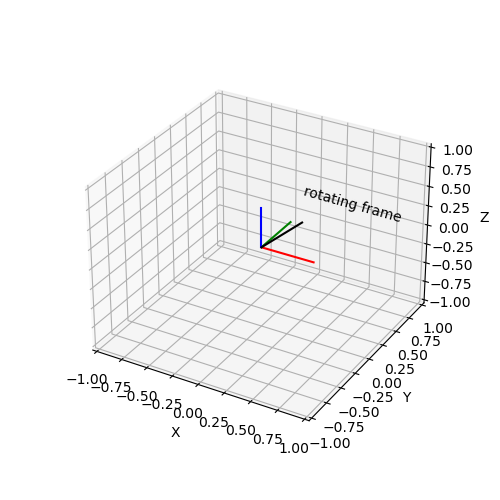

Note
Click here to download the full example code
Animate Rotation¶
Animates a rotation about the x-axis.
print(__doc__)
import numpy as np
import matplotlib.pyplot as plt
from mpl_toolkits.mplot3d import axes3d
import matplotlib.animation as animation
from pytransform3d.plot_utils import Frame
from pytransform3d import rotations as pr
def update_frame(step, n_frames, frame):
angle = 2.0 * np.pi * (step + 1) / n_frames
R = pr.passive_matrix_from_angle(0, angle)
A2B = np.eye(4)
A2B[:3, :3] = R
frame.set_data(A2B)
return frame
if __name__ == "__main__":
n_frames = 50
fig = plt.figure(figsize=(5, 5))
ax = fig.add_subplot(111, projection="3d")
ax.set_xlim((-1, 1))
ax.set_ylim((-1, 1))
ax.set_zlim((-1, 1))
ax.set_xlabel("X")
ax.set_ylabel("Y")
ax.set_zlabel("Z")
frame = Frame(np.eye(4), label="rotating frame", s=0.5)
frame.add_frame(ax)
anim = animation.FuncAnimation(
fig, update_frame, n_frames, fargs=(n_frames, frame), interval=50,
blit=False)
plt.show()
Total running time of the script: ( 0 minutes 0.079 seconds)